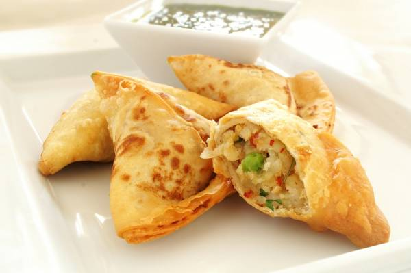
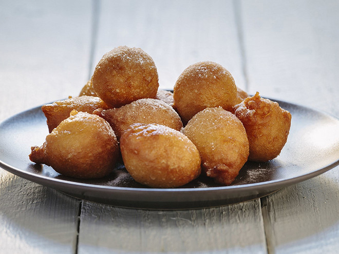
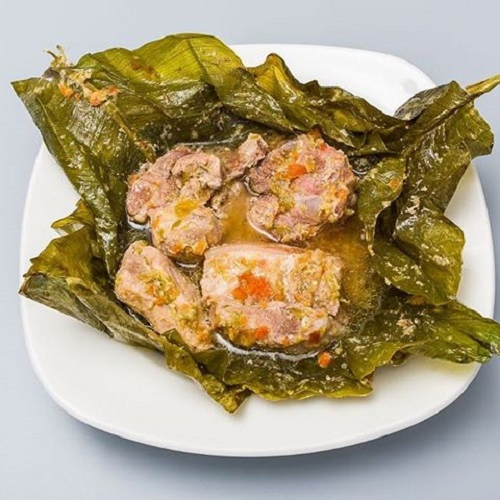
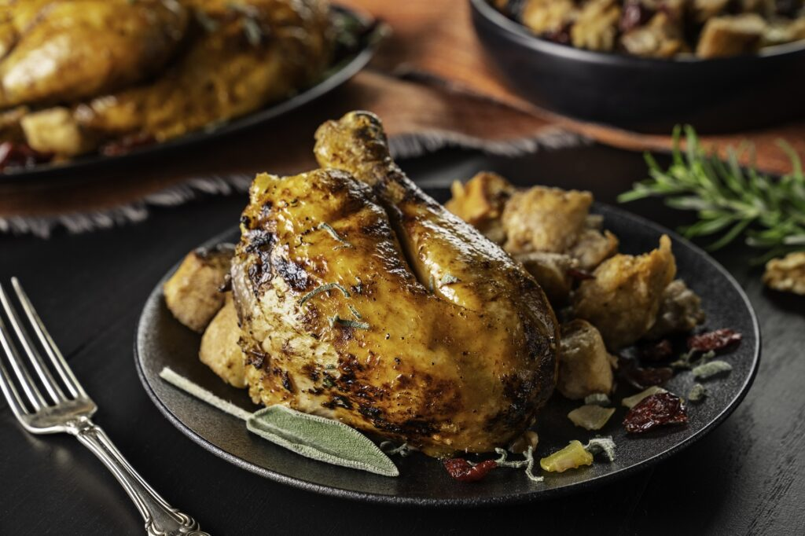
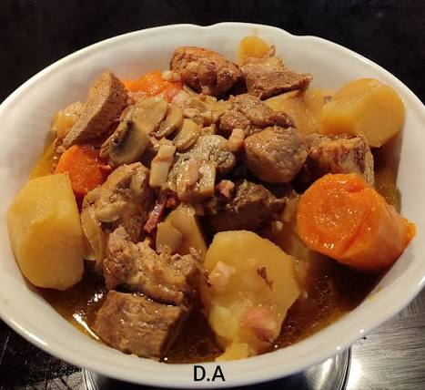
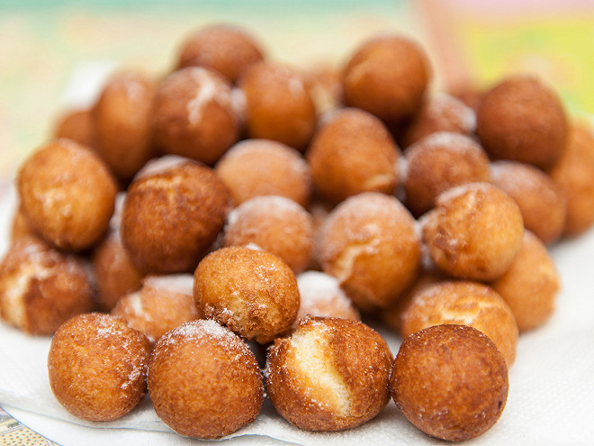
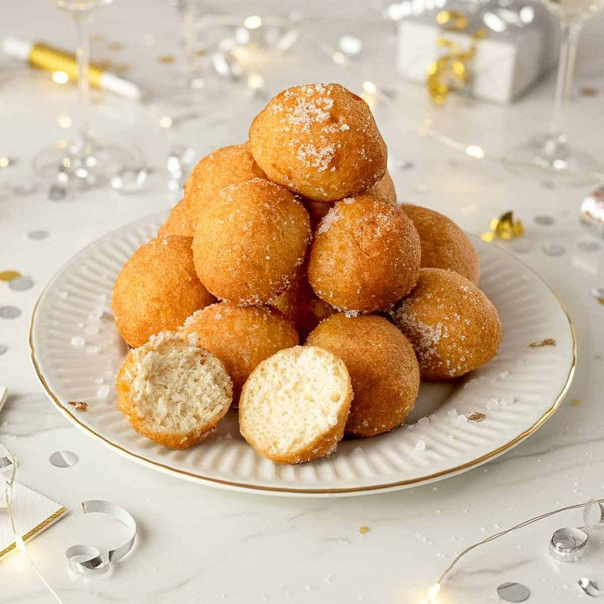

Samossas aux légumes
Délicieux samossas croustillants farcis aux légumes frais et épices douces.
3 500 FCFA
Ingrédients : Pâte à samossa, carottes, chou,
oignon, épices
Cuisine congolaise authentique
Découvrez la richesse de la cuisine congolaise, préparée avec des ingrédients frais et locaux dans notre restaurant situé au cœur de Brazzaville.
Découvrez nos entrées qui éveilleront vos papilles

Délicieux samossas croustillants farcis aux légumes frais et épices douces.

Beignets moelleux à la banane plantain, légèrement sucrés, servis avec une sauce piquante.

Poisson frais dans un bouillon croustillant, enveloppé dans des feuilles de bananier.
Les incontournables de la cuisine congolaise

Poulet rôti super bon

Poisson frais grillé au feu de bois, servi avec une sauce piquante.

Sauce gombo onctueuse avec morceaux de porc tendre, accompagnée de fufu ou de riz.

Feuilles de manioc finement pilées et cuites dans une sauce avec poisson fumé.

Viande marinée et cuite à la vapeur dans des feuilles de bananier, avec des légumes.
| Catégorie | Plat | Prix (FCFA) | Portion |
|---|---|---|---|
| Entrées | Samossas aux légumes | 3 500 | 6 pièces |
| Beignets de banane | 3 000 | 4 pièces | |
| Maboke de poisson | 4 500 | 1 portion | |
| Plats principaux | Poulet à la moambe | 6 500 | 1 personne |
| Poisson braisé | 7 000 | 1 personne | |
| Sauce gombo à la viande | 6 000 | 1 personne | |
| Saka-saka au poisson | 5 500 | 1 personne | |
| Liboke de viande | 7 500 | 1 personne | |
| Desserts | Beignets sucrés | 2 500 | 6 pièces |
| Mikate (beignets) | 2 000 | 5 pièces | |
| Fruit frais | 3 000 | 1 assiette | |
| Boissons | Jus de bissap | 1 500 | 35 cl |
| Jus de gingembre | 1 500 | 35 cl | |
| Eau minérale | 500 | 50 cl | |
| Prix moyen | 4 000 FCFA | ||

Beignets légers et moelleux, légèrement sucrés, parfaits pour le café.

Beignets croustillants nappés de miel et saupoudrés de graines de sésame.